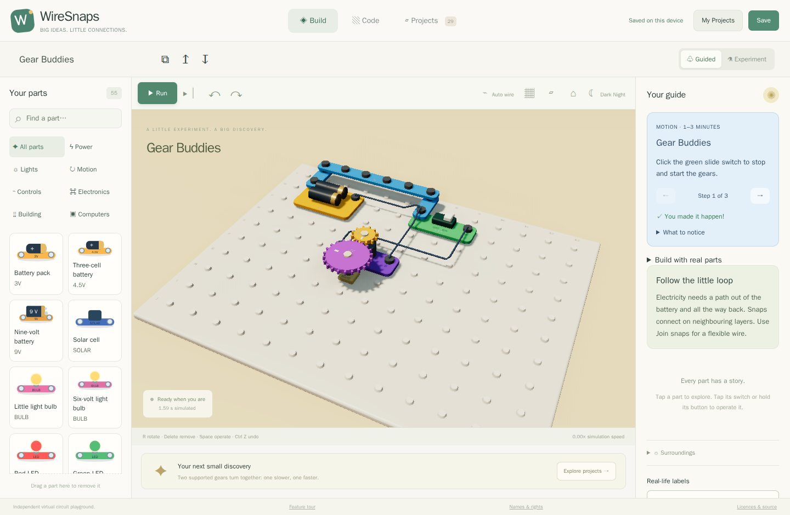

WireSnaps is a 3D electronics playground that runs in your browser. Build a light, make a fan spin, teach a tiny computer a dance, then change one thing and see what happens. Electricity, temperature and motion are simulated locally.
55 parts · 25 showcases · 4 virtual breakage experiments · 2 programmable chip families
This guide is also published at demo/ in the built website. Use project links
there to launch a circuit; when reading the repository, find the same title in
the playground's Projects collection.
Try the glowing bulb · Explore all 29 projects

Build something you can understand
Rounded parts click onto a board. Polarity signs, diode bands and transistor pin labels make the connections visible. Solid bodies cannot occupy the same space; turning a switch changes the circuit immediately. Select a part to learn what it does, what it needs and what to try next.
What this lets you do: discover a complete electrical loop, trace a confusing connection, build a bridge between layers, and rewire a running circuit without starting the program again. Take the construction tour.
A tiny computer, with real electrical responsibilities
Stack blocks to wait, repeat, make decisions and read sensors. The program runs inside an emulated AVR or PIC chip. Its pins supply electrical signals to your circuit: an LED still needs a resistor, and a motor needs a suitable driver.

What this lets you do: make traffic lights take turns, or turn a button and a dial into a dimmer. Edit the supplied program and watch the circuit respond. Explore programming.
Night changes more than the picture
A lit bulb throws warm light onto nearby parts. Dark Night lowers the simulated sunlight too: solar power drops and light sensors change their response. Motor loads, wind, stored energy and heat give you more ways to investigate cause and effect.

What this lets you do: create a one-transistor night light, store a little energy in a capacitor or turn a generator to make electricity. Explore the experiments.
Help that stays beside the experiment
- Guided mode pauses before predicted damage and suggests a useful change.
- Next-part ideas offer up to four candidates after selecting or placing a part, with a reason for each suggestion.
- Short projects give steps, an expected observation, a completion check and something else to try. There are separate NPN, PNP and code collections.
- My Projects keeps multiple inventions in this browser, including their code, preferences, lesson progress and any virtual damage. Export JSON for a portable copy.
What is ready, and what is still growing
This is a working development milestone. It does not implement every part in every construction kit. Some model constants are educational estimates; detailed radio, recording and proprietary sound modules are still incomplete. Physical kit fit and safety are not certified by a simulation.
The default is Guided mode with original WireSnaps names. Some lessons choose a specific environment, such as night for a night light. Breakage experiments open paused and carry a persistent simulation-only warning.
How the simulation works · Names, licences and reference data
WireSnaps is independent and is not affiliated with or endorsed by the makers of the construction kits referenced in its optional naming presets.